Pharma Inspector*
Executive Summary
Pharma Inspector turns an ordinary Android phone into an offline inspection station for loose tablets. The phone camera looks at a tray, a vision model finds and scores every tablet, calibrated rules give each one a verdict, and Llama 3.2 running on the same phone explains the verdict to the operator in plain language. No cloud, no GPU and no network permission are used.
| Goals | How the project meets them |
|---|---|
| Detect defective tablets reliably | PatchCore-lite anomaly detector, calibrated on separate data, evaluated once on held-out images |
| Run in real time on a phone | Both models on the phone CPU; a 9-tablet tray is decided in under one second |
| Give the operator useful advice | Llama 3.2 1B on ExecuTorch explains each flagged tablet in four short lines |
| Make the operator's job easy | Clear verdict banner, labelled boxes, per-item cards, local log with CSV export |
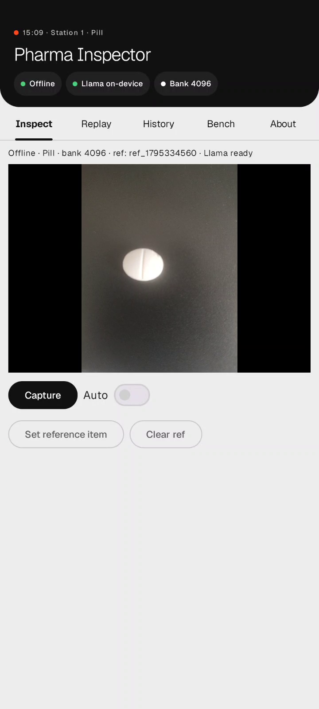
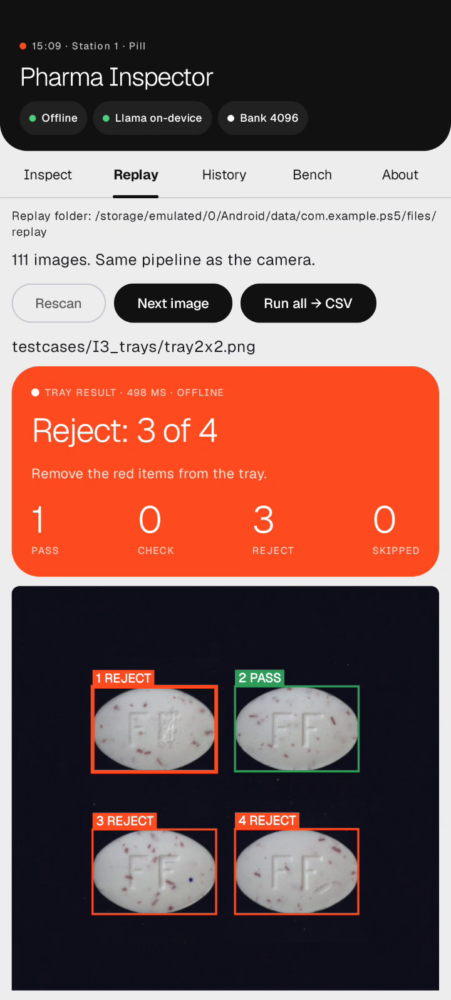
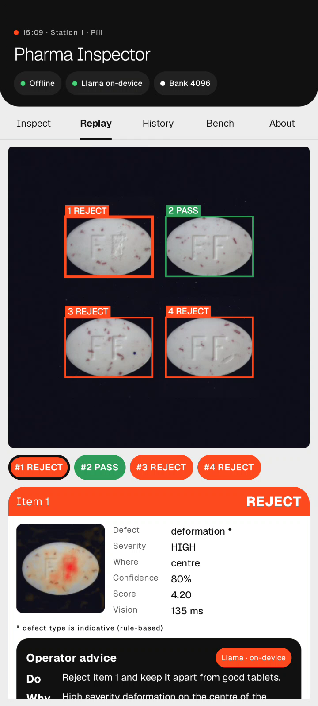
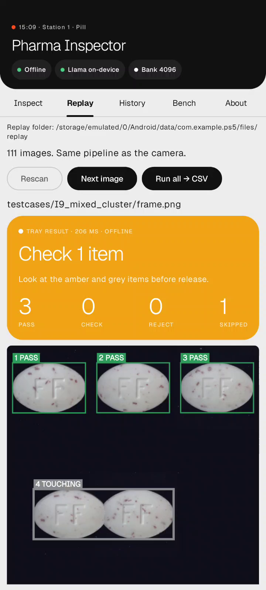
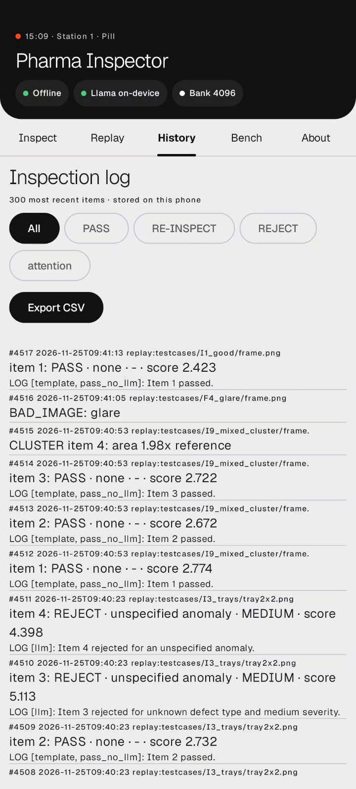
Scope
The station works in stop-and-shoot mode: the operator places a tray on a matte dark surface under a fixed phone, and the app inspects once the scene is still (or on a button press).
Deliverables
- Android app with camera and replay modes, per-item verdicts, severity, confidence and advice
- Vision model (ONNX Runtime) and Llama 3.2 1B (ExecuTorch), both running on the phone
- Local inspection log with CSV export, and a benchmark screen for on-device measurements
- Source code, scripts that regenerate every result, this report and a demo video
Out of scope: moving conveyors at line speed, stacked tablets, underside defects, blister packs and rejection hardware. The app alerts and logs; it does not move tablets.
Methodology
The system has two separate pipelines that meet at one JSON record.
| Stage | What happens |
|---|---|
| 1. Quality gate | Frames that are too dark, too bright, glared or blurred are refused before any model runs |
| 2. Item finder | OpenCV finds each tablet; touching, cut-off, unknown or extra items are marked and never passed |
| 3. Vision model | Each tablet is rotated, cropped to 256 x 256 and scored by PatchCore-lite, which also returns a defect heatmap |
| 4. Decision rules | Calibrated thresholds give PASS, RE-INSPECT or REJECT, plus severity (Low, Medium, High) and confidence |
| 5. Hand-off | One JSON record per flagged tablet: verdict, defect type, severity, confidence, location, box |
| 6. Advisory | Llama 3.2 1B writes four lines (Do, Why, Check, Log); a validator checks them, otherwise a template is used |
Vision pipeline
- Model: PatchCore-lite. ResNet-18 features from two layers, projected to 128 dimensions and compared with a memory bank of normal patches. It learns from good tablets only, so it needs no defect labels.
- Runtime: ONNX Runtime Android 1.23.2 on the CPU, 4 threads, one tablet at a time.
- Data: MVTec AD
pill. Training uses good images only; thresholds use a separate calibration split; all accuracy numbers come from a held-out evaluation split used once for the final configuration. - Verdict: below
t_passis PASS, abovet_rejectis REJECT, in between is RE-INSPECT. Severity comes from defect size and type. Defect type is indicative and rule-based.
Advisory pipeline
- Model: Llama 3.2 1B Instruct, exported with ExecuTorch 1.5.1 for the XNNPACK CPU backend.
- Input: the JSON record only. Llama never sees images and never changes the verdict.
- Output: four labelled lines. The first line always starts with the action set by the rules (Reject, Re-inspect, Release), so the advice cannot contradict the decision.
- Safety net: each answer is checked for format, length, the right action word, no invented numbers and no made-up re-inspection results. Anything that fails is replaced by a fixed template, and the log records why.
- Flow: only flagged tablets go to Llama, through a small queue that handles rejects first.
Results
Detection accuracy (on the phone)
Held-out evaluation split, run once on the phone (memory bank 4096). A tablet counts as flagged when its verdict is RE-INSPECT or REJECT. Source: results/detection_eval_device.json.
| metric | value |
|---|---|
| images (defective / good) | 86 (73 / 13) |
| precision | 0.958 |
| recall | 0.945 |
| F1 | 0.952 |
| image AUROC | 0.940 |
| miss rate | 0.055 |
| false-alarm rate | 0.231 |
| TP / FP / FN / TN | 69 / 3 / 4 / 10 |
| not inspected | 0 |
Verdicts:
| truth | PASS | RE-INSPECT | REJECT |
|---|---|---|---|
| good | 10 | 2 | 1 |
| defective | 4 | 12 | 57 |
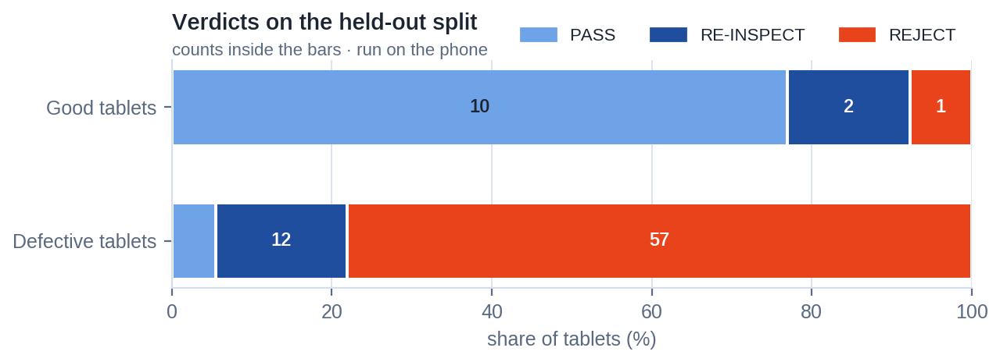
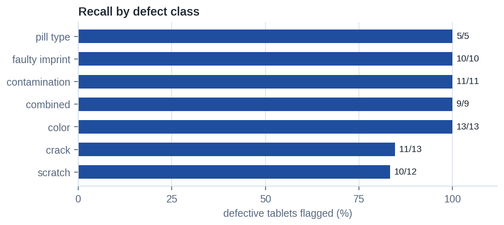
Speed
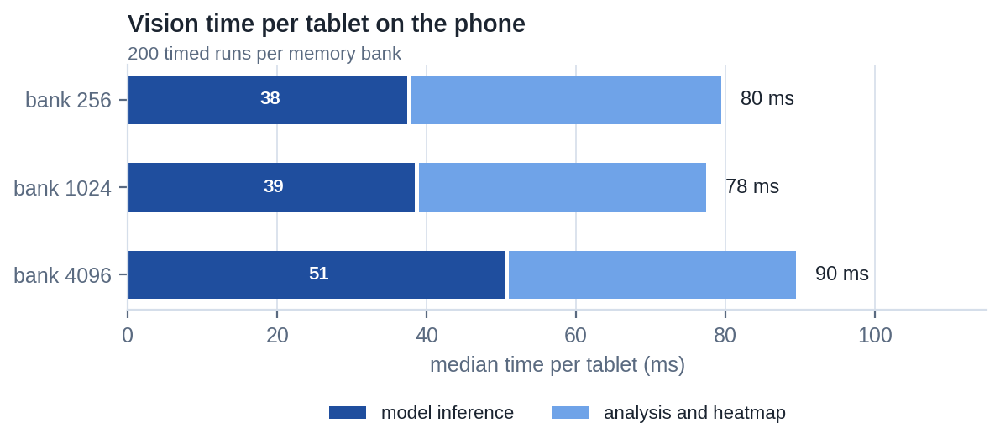
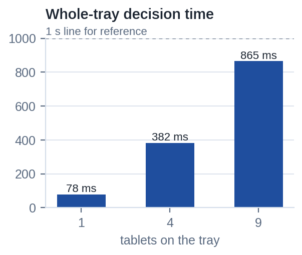
| measurement | value | derived | note |
|---|---|---|---|
| full pipeline, replay, 60 s | 9.47 frames/s | 568.2 items/min | replay frames (first 20 non-golden replay images), single-item frames; camera not involved |
| golden parity (device vs PyTorch score) | n = 5 | median rel. diff 1.4%, max 3.4% | difference includes resize (OpenCV INTER_AREA on device vs PIL bilinear-antialias in PyTorch) and fp32 runtime differences |
Advisory quality and speed
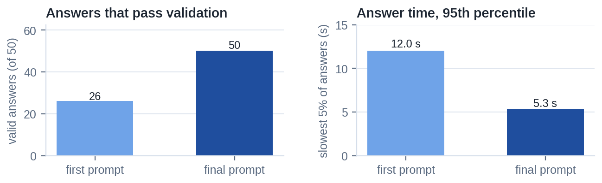
| run | n | format-valid | manually consistent | TTFT s (median / p95) | decode tok/s (median) | tokens (median) | total s (median / p95 / max) | PSS MB (median) |
|---|---|---|---|---|---|---|---|---|
| v1 prompt seed2026 | 50 | 26/50 | not reviewed | 1.05 / 1.12 | 17.9 | 69 | 5.00 / 12.00 / 37.7 | 1055 |
| v2 prompt seed2027 | 50 | 50/50 | 47/50 | 2.09 / 2.26 | 17.4 | 51 | 4.99 / 5.32 / 6.5 | 1067 |
Model load 2.4 s; app PSS 329 MB before loading Llama, 1167 MB after loading.
The first prompt was tested on one set of 50 cases and improved; the final prompt is reported on 50 new cases.
Hardware Utilisation
| Resource | Usage |
|---|---|
| Device | Nothing Phone (3a), Android 17, 8 GB RAM |
| Compute | CPU only for both models; GPU and NPU not used |
| Threads | Vision thread (ONNX Runtime, 4 threads), advisory thread (Llama), camera thread, UI thread |
| Memory | About 330 MB with vision only; about 1.17 GB with Llama loaded (app PSS) |
| Storage | Vision model 11 to 13 MB per bank; Llama model 820.6 MB; tokenizer 2.1 MB |
| Sustained load | Throughput eased from about 4.0 to 3.1 frames per second as the phone warmed from 31 °C to 42 °C (chart below) |
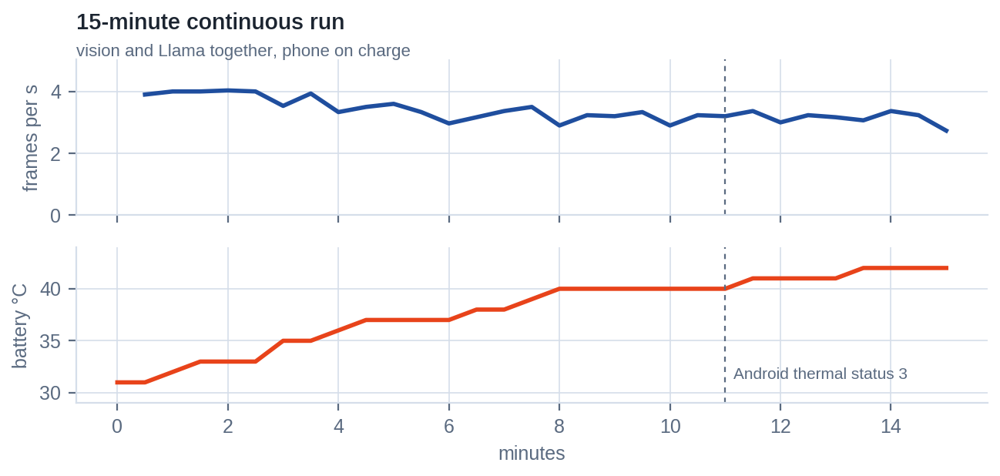
Optimisation Techniques
| Area | Technique | Effect |
|---|---|---|
| Vision model | ResNet-18 instead of WideResNet-50, 128-dimension projection, coreset memory bank | Phone-sized model with three accuracy/speed options |
| Vision runtime | Whole model exported as one ONNX graph, fixed input, batch 1 | One model call per tablet |
| Pipeline | Quality gate and item finder run before the model; PASS items skip Llama | No wasted inference |
| Capture | Inspect only when the scene is still | No continuous video load |
| Llama size | ExecuTorch 8-bit activations, 4-bit weights (group 32), 4-bit embeddings | 1B model in 820.6 MB |
| Llama runtime | XNNPACK backend, KV cache, SDPA custom op, 1024-token context | About 17 tokens per second on the CPU |
| Llama output | Pre-filled first line, early stop after four lines, token cap | Slowest 5% of answers went from 12.0 s to 5.3 s |
| Scheduling | Bounded queue, rejects first, timeout with template fallback | The line never waits for the language model |
Conclusion
Pharma Inspector shows that a single mid-range phone can find, judge and explain tablet defects entirely offline. Next steps are a counted test on real tablets, power measurements, a trained defect-type classifier and a port to Raspberry Pi 5 with a Hailo accelerator.
The app produces illustrative engineering guidance, not GMP or regulatory advice.
Appendix
A. Data split
train_good 241 (model fitting), val_good 26 (calibration); MVTec test split into calib 81 / eval 86 (seed 42, stratified).
| MVTec test class | total | calib | eval |
|---|---|---|---|
| color | 25 | 12 | 13 |
| combined | 17 | 8 | 9 |
| contamination | 21 | 10 | 11 |
| crack | 26 | 13 | 13 |
| faulty_imprint | 19 | 9 | 10 |
| good | 26 | 13 | 13 |
| pill_type | 9 | 4 | 5 |
| scratch | 24 | 12 | 12 |
B. Calibration
| bank | calib image AUROC | t_pass (P5 defective) | t_reject (P95 good) | t_pix | pixel F1 (calib) | severity area cuts |
|---|---|---|---|---|---|---|
| 256 | 0.894 | 4.431 | 4.914 | 4.438 | 0.725 | 0.79% / 1.47% |
| 1024 | 0.946 | 3.523 | 3.998 | 3.622 | 0.746 | 0.85% / 1.86% |
| 4096 | 0.949 | 2.906 | 3.391 | 3.023 | 0.759 | 0.94% / 2.04% |
C. Results per defect class
| eval class | n | PASS | RE-INSPECT | REJECT | rate |
|---|---|---|---|---|---|
| color | 13 | 0 | 2 | 11 | flagged 13/13 |
| combined | 9 | 0 | 2 | 7 | flagged 9/9 |
| contamination | 11 | 0 | 2 | 9 | flagged 11/11 |
| crack | 13 | 2 | 3 | 8 | flagged 11/13 |
| faulty_imprint | 10 | 0 | 2 | 8 | flagged 10/10 |
| good | 13 | 10 | 2 | 1 | false alarms 3/13 |
| pill_type | 5 | 0 | 0 | 5 | flagged 5/5 |
| scratch | 12 | 2 | 1 | 9 | flagged 10/12 |
D. Robustness tests (synthetic frames)
All frames are synthetic (MVTec tiles on a matched background). 17/20 pass.
| id | scenario | expected | observed | result |
|---|---|---|---|---|
| F1 | Empty tray | NO_ITEMS | NO_ITEMS (place items) | PASS |
| F2 | Blurred frame | BAD_IMAGE (blur) | BAD_IMAGE (blur) | PASS |
| F3a | Too dark | BAD_IMAGE (dark) | BAD_IMAGE (dark) | PASS |
| F3b | Too bright | BAD_IMAGE (bright) | BAD_IMAGE (bright) | PASS |
| F4 | Glare patch | BAD_IMAGE (glare) | BAD_IMAGE (glare) | PASS |
| I1 | One good item | 1 item, OK, PASS | #1 OK PASS | PASS |
| I2 | One defective item | 1 item, RE-INSPECT or REJECT | #1 OK REJECT | PASS |
| I3 | Mixed tray 2x2 | 4 items inspected; verdicts compared with single-image runs | #1 OK REJECT; #2 OK PASS; #3 OK REJECT; #4 OK REJECT / agreement with single-image eval verdicts 4/4 | PASS |
| I3 | Mixed tray 3x3 | 9 items inspected; verdicts compared with single-image runs | #1 OK REJECT; #2 OK PASS; #3 OK RE-INSPECT; #4 OK RE-INSPECT; #5 OK REJECT; #6 OK RE-INSPECT; #7 OK REJECT; #8 | PASS |
| I4 | Touching items | CLUSTER, not inspected | #1 CLUSTER | PASS |
| I5 | Item cut by frame edge | PARTIAL for the cut item; other item inspected | #1 OK PASS; #2 PARTIAL | PASS |
| I6 | Foreign objects | UNKNOWN_OBJECT for both objects, never PASS | #1 OK PASS; #2 UNKNOWN_OBJECT; #3 UNKNOWN_OBJECT | PASS |
| I6b | Dark foreign object on dark fixture (known limitation) | UNKNOWN_OBJECT | #1 OK PASS | FAIL |
| I7 | More than 12 items | 12 inspected, 4 TOO_MANY | #1 OK PASS; #2 OK PASS; #3 OK PASS; #4 OK PASS; #5 OK PASS; #6 OK PASS; #7 OK PASS; #8 OK PASS; #9 OK PASS; #1 | PASS |
| I8 | Wrong product (capsule) | UNKNOWN_OBJECT | #1 CLUSTER | FAIL |
| I9 | Mixed tray with cluster | 3 inspected + 1 CLUSTER needing attention | #1 OK PASS; #2 OK PASS; #3 OK PASS; #4 CLUSTER | PASS |
| I10.0 | Near-threshold calib defect | RE-INSPECT (calib score in band) | #1 OK RE-INSPECT score 3.0923638 | PASS |
| I10.1 | Near-threshold calib defect | RE-INSPECT (calib score in band) | #1 OK REJECT score 3.6350985 | FAIL |
| I10.2 | Near-threshold calib defect | RE-INSPECT (calib score in band) | #1 OK RE-INSPECT score 3.1241007 | PASS |
| I10.3 | Near-threshold calib defect | RE-INSPECT (calib score in band) | #1 OK RE-INSPECT score 3.2004256 | PASS |
E. Latency tables
Nothing Phone (3a), ONNX Runtime 1.23.2 on CPU (4 threads), 200 timed runs after 20 warm-up runs.
| bank | n | inference ms (median / p95) | post-processing ms (median / p95) | total per item ms (median / p95) |
|---|---|---|---|---|
| 256 | 200 | 38 / 44 | 42 / 45 | 80 / 87 |
| 1024 | 200 | 39 / 43 | 39 / 42 | 78 / 84 |
| 4096 | 200 | 51 / 59 | 39 / 44 | 92 / 103 |
Single replay frame each (n = 1 per row), bank 4096. Frame time covers gate, item finder, crops, and vision plus analysis per item; it excludes image decoding.
| frame | items inspected | frame ms | sum of vision ms | frame ms per item |
|---|---|---|---|---|
| 1 item | 1 | 78 | 52 | 78 |
| 4 items | 4 | 382 | 207 | 96 |
| 9 items | 9 | 865 | 463 | 96 |
Across the 86 single-item eval frames: vision median 55 ms (p95 72), frame median 116 ms (p95 144).
F. 15-minute run
| measurement | value |
|---|---|
| duration / frames | 900 s / 3041 |
| throughput first 2 min / last 2 min | 4.0 / 3.1 frames/s |
| battery temperature start / end | 31.0 / 42.0 C |
| max Android thermal status (first time >= 3) | 3 (660 s) |
| PSS max | 1232 MB |
| advisory queue depth (end) | 5 |
| battery | 100% -> 100% (charging: power not measured) |
Source: results/device/longrun_15min_20261122_232431.csv.
G. Reproducibility and licences
- Build, run and reproduce:
README.md. Every table and chart here is regenerated withpython bench/make_tables.pyandpython bench/make_figures.py; the PDF withpython report/build_pdf.py. Decisions with reasons:docs/DECISIONS.md. - MVTec AD is CC BY-NC-SA 4.0 (non-commercial); images are not included in the repository.
- Llama 3.2 is licensed under the Llama 3.2 Community License, Copyright © Meta Platforms, Inc. All Rights Reserved. Built with Llama.